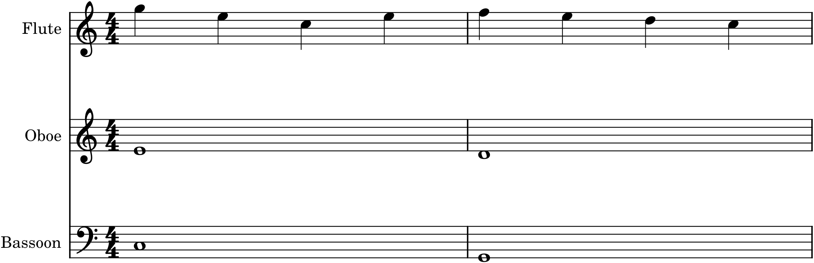
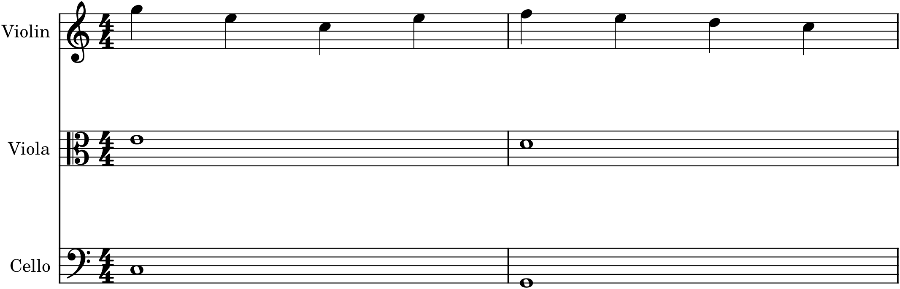

We arrive at the final part, and the culmination of everything before it: orchestration. It is easy to mistake what orchestration is. The beginner imagines it as a clerical task — you have composed the music, and now you assign the notes to instruments, like handing out sheet music at a rehearsal. That is not orchestration; that is transcription, and it misses the entire art. Orchestration is composing with timbre — treating the colour of sound as a musical dimension as real and as expressive as pitch, rhythm, and harmony. The choice of which instrument plays a note is not a clerical afterthought; it is a compositional decision that changes the music itself. This chapter is about grasping that idea, because everything else in Part 7 flows from it.
35.1Orchestration is composition, not transcription
Here is the proof, in two pictures. The following passage is exactly the same music — the same pitches, the same rhythms, the same registers, the same voicing — scored two ways:


Look at Figure 35.1 and Figure 35.2 side by side and you will see almost no difference on the page — the same noteheads in the same places. But play them (as the “In MuseScore” box will have you do) and they are unmistakably different pieces of music, because timbre is not decoration applied to the “real” notes; it is part of the music. This is the whole thesis of orchestration: the same notes, differently scored, are different music. The orchestrator composes in that difference.
35.2Timbre as a musical dimension
Every musical idea has several dimensions you already compose in: pitch (which notes), rhythm (when), harmony (what sounds together), dynamics (how loud). Orchestration adds one more: timbre — tone colour, the quality that makes an oboe an oboe and a trumpet a trumpet. It is as expressive as any of the others. A rising line crescendos in colour as well as volume when it passes from strings to winds to brass; a melody handed from cello to violin brightens; a chord glows or darkens depending on who voices it. Learning to hear and shape this dimension — to think “what colour should this be?” alongside “what note, what rhythm?” — is what it means to become an orchestrator.
35.3What orchestration does
Composing with timbre is not arbitrary colour-splashing; it does specific musical jobs:
- Clarify. Good orchestration makes the texture legible — the melody stands out in a distinct colour, the bass is clear, the inner voices are separated so the ear can follow each. Much of orchestration is simply making sure the listener hears the right thing.
- Colour. It gives each idea a character: a plaintive oboe melody, a heroic brass theme, a shimmering string accompaniment. The instrument is part of what the idea means.
- Balance. It ensures the important line is heard over everything else — the constant problem of writing for many instruments (Chapters 30, 34).
- Articulate form. A change of colour marks a change of section: a new theme enters in a new instrument, a repeat is reorchestrated, so that the form of Part 4 becomes audible through timbre.
- Build and release. Adding instruments and colours builds toward a climax; thinning them down to a single line creates repose. Orchestration shapes tension across a whole piece.
35.4The foundation you already have
Here is the encouraging truth: you are not starting over. Orchestration draws on everything in this book, combined. It needs the instruments and their ranges and colours (Part 6); the craft of writing independent lines and balanced ensembles (Part 5); the textures of melody, accompaniment, and counterpoint (Parts 3 and 5); the forms whose sections you will articulate with colour (Part 4); and the harmony and voice leading underneath it all (Part 2). Orchestration is not a new subject so much as the integration of every subject you have studied, now with timbre added as the organizing dimension. You already have the pieces; this part teaches you to assemble them into orchestral thinking.
35.5The orchestrator’s mindset
A few habits of mind distinguish good orchestration. Think in colours — hear each line as a specific instrument, not an abstract voice. Ask “who plays this, and why?” of every strand, and let the answer be musical, not automatic. Value restraint — the beginner’s instinct is to use everything all the time; the master knows that a single flute against silence can be more powerful than the full orchestra, and that the tutti means most when it is saved. Let the ear lead — orchestration, more than any other part of composition, is judged by sound, so you must hear your choices, which is exactly what software now lets you do. And study scores — the great orchestrators taught themselves by looking at how the masters did it (Chapter 39, and the Capstone).
35.6The scope of this part
This is an introduction to orchestration, kept — like the rest of the book — to an intermediate ceiling. We will not attempt the full symphony orchestra with its exotic percussion and extended techniques; that is the territory of the specialized texts in Appendix D. Instead, Part 7 gives you the working principles — orchestral textures (Chapter 36), balance (Chapter 37), and scoring for a modest chamber orchestra (Chapter 38) — and teaches you to learn from real scores (Chapter 39). Then the Capstone asks you to orchestrate a piece of your own. It is enough to write real, effective music for a real ensemble of players, and to hear, for the first time, your own music in orchestral colour.
In MuseScore
Nothing teaches the reality of orchestration faster than MuseScore’s playback, because it lets you hear timbre change while the notes stay fixed.
- Score a passage two ways. Enter a short phrase for three instruments, then copy it onto three different instruments of another family — winds, then strings, as in Figure 35.1 and Figure 35.2. Play both.
- Use MuseSounds (the free high-quality sounds) so the difference between a flute and a violin, an oboe and a clarinet, is vivid and real rather than a synthesizer’s approximation.
- Reassign a melody from one instrument to another (copy it to a new staff) and play it, listening to how the character of the tune changes with its colour.
- Explore the full Orchestra template (File ▸ New) to see the standard instruments laid out in score order.
Try it: play the wind scoring of Figure 35.1, then the string scoring of Figure 35.2 — the same notes, you will see on the page, but two different pieces of music to your ear. That gap between the identical notes and the different sound is orchestration. Everything in the rest of this part is about learning to compose, deliberately, in that gap.